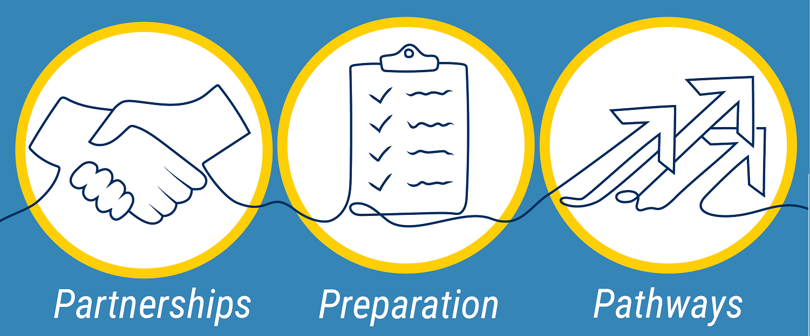

Academic Support at UMSI
At the University of Michigan School of Information (UMSI), we are committed to supporting our students' academic success by offering a wide array of resources and services. Our academic advising team provides personalized guidance to help you navigate your curriculum, select courses, and address any academic challenges or questions you may encounter during your studies. UMSI students also have access to the extensive collections and study spaces within the University Library system, offering both digital and physical resources essential for research and coursework. Additionally, our specialized tutoring services and the UMSI Writing Center are available to support you in mastering complex subjects and enhancing your written communication skills. By utilizing these academic resources, UMSI students can thrive in their studies and achieve their educational goals.
Health & Wellness Resources
UMSI students have access to a variety of health and wellness resources to support their physical and mental well-being.
- UMSI Embedded CAPS Counselor
- Health and Counseling (UHC) formally U-M Counseling and Psychological Services (CAPS)
- Peer Counseling
- Maize & Blue Cupboard (Food Access)
- SilverCloud Interactive Mental Health Resources
- University Health Services (UHS)
- Wolverine Support Network
- Wolverine Wellness
Community Building Resources
-
Center for Campus Involvement (CCI)
-
Ginsberg Center
